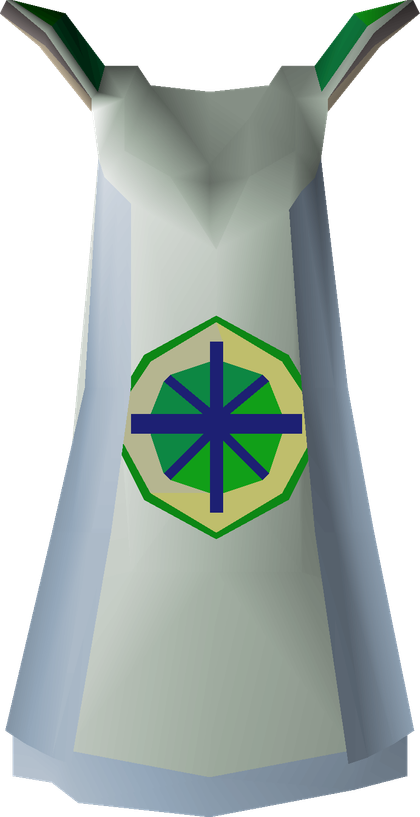
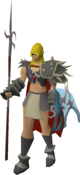
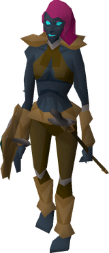
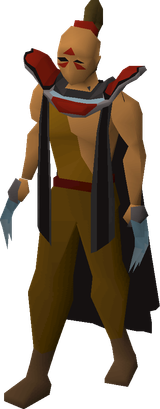
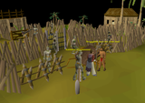
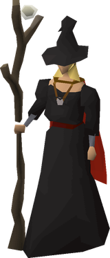
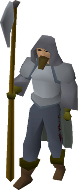
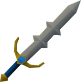
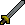

OSRS Max Time-Wasting Plan
OSRS Max Time-Wasting Plan
Slayer
74 for The Blood Moon Rises and the quest cape, 95 before the 

Nieve / Steve
Your starting master. Good task variety, reachable now. Level 99 Slayer bypasses the combat requirement.
No Method Locked In
The plan sets a target here but does not name a method. Pick one with the circle at the end of any row below.
Along the Way
Training with Nieve, cannon and burst → Duradel, cannon and barrage trains Attack, Strength, Defence, Hitpoints, Ranged and Magic alongside it. Where those land as you go, and what your combat level reads at each point.
| At | Hours | Att | Str | Def | HP | Rng | Mag | Cmb |
|---|---|---|---|---|---|---|---|---|
| now | — | 71 | 80 | 70 | 75 | 62 | 68 | 94 |
| Slayer 70 | 7h | 72 | 80 | 71 | 75 | 64 | 70 | 95 |
| Slayer 72 | 12h | 72 | 80 | 71 | 76 | 66 | 71 | 95 |
| Slayer 74 | 19h | 73 | 80 | 72 | 77 | 68 | 72 | 96 |
| Slayer 75 | 23h | 73 | 81 | 72 | 77 | 68 | 72 | 96 |
| Slayer 80 | 48h | 75 | 82 | 75 | 79 | 73 | 75 | 99 |
| Slayer 85 | 91h | 78 | 83 | 78 | 82 | 77 | 79 | 101 |
| Slayer 90 | 133h | 82 | 86 | 81 | 85 | 82 | 84 | 105 |
| Slayer 95 | 201h | 86 | 89 | 86 | 89 | 86 | 88 | 110 |
| Slayer 99 | 286h | 89 | 91 | 89 | 92 | 90 | 92 | 113 |
Block and Skip List
This table is for Duradel: blocks cost 100 points and skips cost 30. Nieve has different task weights, extra assignments and 90-point blocks; block lists do not transfer. w is the task weight, so blocking a heavy task saves more rolls than blocking a rare one.
Methods
At 66 Slayer, the best option open to you is Nieve / Steve. Locked rows need a higher level.
| Image | Method | Requirement | XP/hr | Notes | Choose |
|---|---|---|---|---|---|
| Nieve / Stevebest at your level | 85 combat | — | Your starting master. Good task variety, reachable now. Level 99 Slayer bypasses the combat requirement. | ||
 | Konar quo Maten | 75 combat | — | Location-locked tasks. Worth using for milestone points and for Hydra access later. | |
 | Duradelneeds 100 combat | 100 combat, 50 Slayer | — | Your main master after  Shilo Village once you have 100 combat and | |
 | Mortimerneeds 70 Slayer | 70 Slayer, 100 combat | — | Unlocked partway through  Fallen From Grace; 99 Slayer bypasses the combat requirement. Choose from two superior-capable tasks, or three after 50 Mortimer tasks. He is built for superior drops and choice, not cheap skipping. Fallen From Grace; 99 Slayer bypasses the combat requirement. Choose from two superior-capable tasks, or three after 50 Mortimer tasks. He is built for superior drops and choice, not cheap skipping. | |
 | Krystilia (Wilderness) | — | — | Wilderness-only tasks. Fast points and good drops, but risky. Optional. | |
 | Turael/Spria skipping | — | — | Turael-skip trick to reroll bad tasks without spending points. Useful when point-starved. |
Notes
- Block list is the highest-leverage decision in this plan. Block the tasks that are slow and unprofitable for your gear (typically the low-XP-per-hour, high-count ones) rather than the merely boring ones.
- Extend the tasks you'll want to farm later (nechryael, abyssal demons, gargoyles) once points allow.
- Superior Slayer monsters (unlocked by Bigger and Badder) are worth the point cost. They can drop the imbued heart and eternal gem.
- Fallen From Grace also unlocks the repeatable
 Mad Angel. Its
Mad Angel. Its 
Hallowfell drop needs 75
Attack and cleaves up to two nearby targets, so it is a specialised multi-target weapon rather than a universal single-target upgrade. - Everything else in the plan is downstream of Slayer: it carries Attack, Strength, Defence and Hitpoints; via cannon and barrage, it also carries
 Ranged and
Ranged and  Magic.
Magic. - The Along the Way table uses a neutral average split across melee styles. In play, train Strength to 80, Attack to 80, then Defence to 80; return to Strength 85 afterward.
- The task verdict table uses Duradel's weights. Nieve has different weights and extra assignments, and block lists do not carry between masters; revisit blocks when you switch.
Which Tasks to Do, Skip or Block
Verdicts and rates are the wiki's, for Duradel tasks. Sorted by verdict, then by how often the task comes up. Weight is its share of the assignment roll, so a heavy task you dislike is worth a block slot more than a rare one.
| Verdict | Task | What the wiki says |
|---|---|---|
| do | Dark Beasts | Do Fast task when unextended. Relatively low-effort task. |
| do | Araxytes | Do Good experience, decent profit and a boss variant. Unextended tasks can be done for quick points. |
| do | TzHaar | Do if you have access to Blood Barrage or can consistently complete the Fight Caves. Otherwise, do not unlock. Good experience rates when barraging in the inner part of Mor Ul Rek. Drops cover the rune costs. Alternatively, you can choose the Fight Caves—or the Inferno if you have already completed it—as your task. This task can be 'skipped' easily by entering and immediately leaving the Fight Caves, or by dying inside the Fight Caves or the Inferno. |
| do | Black Dragons | Do A very fast unextended task when killing baby black dragons. Brutal black dragons can be killed for profit at higher levels. |
| do | Dagannoth | Do Good experience rates. |
| do | Kalphites | Do Good experience rates when cannoning the soldiers. Relatively low-effort task. |
| do | Nechryael | Do Good experience rates when barraging in the Catacombs of Kourend. Decent profit if meleeing. |
| do | Smoke Devils | Do Barraging smoke devils currently offers the best experience rates in the game. Drops cover the rune costs. |
| do | Bloodveld | Do Good experience rates when cannoning mutated bloodvelds in the Meiyerditch Laboratories or Buccaneers' Laboratory. Drops cover the cost of using the cannon in the Meiyerditch Laboratories. |
| do | Ankou | Do Decent experience and a relatively fast task when barraging in the Catacombs of Kourend. Although risky, barraging ankou in the Wilderness Slayer Cave provides up to 90,000 Slayer XP per hour, and the drops cover the cost of using blighted ancient ice sacks. |
| do | Dust Devils | Do Good experience rates when barraging in the Catacombs of Kourend. Drops cover the rune costs. |
| depends | Metal Dragons | Do for profit; block for XP A fast task with high combat stats and a dragon hunter lance. |
| depends | Abyssal Demons | Do for XP; block for money Decent profit from abyssal whip drops. Decent experience when barraging. Decent experience with low effort when using the Venator bow. |
| depends | Bosses | Only unlock if you want the Slayer helmet bonus against bosses; XP can be very poor. Depending on the boss, this can be a relatively quick task and awards 5,000 Slayer XP upon completion. You may also receive valuable rare drops. |
| depends | Gargoyles | Do for profit; skip for XP Decent profit, relatively low-effort task. Grotesque Guardians can be killed on task. |
| depends | Suqah | Do for XP; skip for profit Decent experience rates. Relatively fast task when unextended. |
| depends | Vyrewatch | Should not be unlocked for XP. Can be unlocked for profit. Killing Vyrewatch Sentinels in Darkmeyer can yield a decent profit. Killing them requires no supplies because Prayer can be restored at the nearby altar. |
| depends | Basilisks | Don't unlock for XP; consider unlocking for profit or to hunt the basilisk jaw on an Ironman Basilisk Knights can be killed on task for good profit. |
| depends | Fire Giants | Do for Magic XP; otherwise, skip Relatively low-effort task. Relatively fast with an imbued black mask and Water Wave or better. |
| depends | Gryphons | Can be unlocked for XP. Should not be unlocked for profit. Good experience rates when cannoning in multicombat areas. |
| depends | Trolls | Do for XP; skip for profit Decent experience rates when cannoning ice trolls on Jatizso or mountain trolls at Mount Quidamortem. Drops cover some of the costs of using the cannon. |
| depends | Frost Dragons | Do for profit; skip for XP Relatively low-effort task. Decent profit. |
| depends | Kurask | Do for profit; skip for XP Somewhat decent profit. |
| skip | Greater Demons | Skip unless killing Tormented Demons or K'ril for profit Mediocre experience rates and commonly assigned. Using the cannon will result in a loss. |
| skip | Drakes | Skip or block unless you're an Ironman hunting their uniques Mediocre experience rates and long task. Not worth doing unless Slayer points are an issue. |
| skip | Wyrms | Skip unless you're an Ironman hunting their uniques Mediocre experience rates. Not worth doing unless Slayer points are an issue. |
| skip | Aberrant Spectres | Skip unless hunting for herbs/seeds Cannot be lured into double-hit cannon spots properly, which results in mediocre experience rates. |
| skip | Skeletal Wyverns | Skip Poor experience rates. |
| skip | Spiritual Creatures | Skip Bring energy or stamina potions, plus restore potions, when entering the God Wars Dungeon via Trollheim because of the cold. Poor experience rates everywhere. Not worth doing for XP unless Slayer points are an issue. |
| skip | Blue Dragons | Skip unless killing Vorkath for profit; compare the Slayer helmet with the Salve amulet beforehand Poor experience rates. |
| skip | Cave Horrors | Skip unless you are an Ironman hunting for a black mask Poor experience rates. Not worth doing for XP unless Slayer points are an issue. |
| skip | Elves | Skip Poor experience rates. Not worth doing unless Slayer points are an issue. |
| skip | Mutated Zygomites | Skip Poor experience rates. Not worth doing unless Slayer points are an issue. |
| skip | Waterfiends | Skip Poor experience rates. Requires some attention because waterfiends use two attack styles with fairly high accuracy. Not worth doing unless Slayer points are an issue. |
| block | Hellhounds | Block unless killing Cerberus for profit Commonly assigned and long task. Using the cannon will result in a loss due to lack of drops. Killing Cerberus effectively requires expensive equipment, and the profit is very inconsistent due to the value mostly being in the rare unique drops. |
| block | Cave Kraken | Block after completing the Kraken Combat Achievements Poor experience rates. Killing cave krakens will result in a guaranteed loss due to the supplies needed to kill them with little net gain. |
| block | Black Demons | Block/skip unless killing demonic gorillas for profit/uniques Long task, especially if killing demonic gorillas. Using the cannon will result in a loss. |
| block | Fossil Island Wyverns | Block with the unique unlock Poor experience rates and mediocre profit. Not worth doing unless Slayer points are an issue. |
| never unlock | Lizardmen | Should not be unlocked Commonly assigned, which makes this task not worth unlocking. Using the cannon will result in a loss. |
| never unlock | Aviansie | Should not be unlocked Poor experience rates. Killing Kree'arra effectively requires very expensive equipment, and the profit is very inconsistent due to the value mostly being in the rare unique drops. |
| never unlock | Red Dragons | Should not be unlocked Mediocre experience rates. |
| never unlock | Warped Creatures | Should not be unlocked Mediocre experience when not using a cannon. The dungeon is multicombat, and the creatures use both melee and ranged attacks. |
Spending Slayer Points
- Block slots. The single biggest lever. Blocks cost 90 points at Nieve and 100 at Duradel. The lists are master-specific, so rebuild yours when you switch; you get seven slots, one per 50 quest points, with the seventh behind the elite Lumbridge and Draynor
 diary.
diary. - Bigger and Badder. 50 points. Superior encounters carry the imbued heart and eternal gem, and can be toggled off freely.
- Slayer helmet. 400 points for the helm plus the components. The imbued version is the best melee and magic head slot on task.
- Extensions. Only on tasks that already pay. Araxytes go from 60-80 to 200-250, which is worth it; metal dragons are not.
- Everything else. Slayer rings, Task Storage at 500 points, Gargoyle Smasher if you keep gargoyle tasks.
The Masters
| Master | Where | Requirement | Points/task | Block cost |
|---|---|---|---|---|
| Turael / Aya | Burthorpe | Any level | 0 | 40 |
| Spria | Draynor Village | A Porcine of Interest | 0 | 40 |
| Mazchna / Achtryn | Canifis | Priest in Peril, 20 combat | 6 | 50 |
| Vannaka | Edgeville Dungeon | 40 combat | 8 | 60 |
| Chaeldar | Zanaris | Lost City, 70 combat | 10 | 70 |
| Konar quo Maten | Mount Karuulm | 75 combat | 18 | 80 |
| Nieve / Steve | Tree Gnome Stronghold | 85 combat or 99 Slayer | 12 | 90 |
| Duradel / Kuradal | Shilo Village | Shilo Village; 100 combat + 50 Slayer, or 99 Slayer | 15 | 100 |
| Krystilia | Edgeville | Any level, Wilderness tasks | 25 | 100 |
| Mortimer | Wyrmscraig Cavern | Partly complete Fallen From Grace; 100 combat + 70 Slayer, or 99 Slayer | modifier only | 120 |
Mortimer, the New Master
Live since 29 July 2026. The modifiers and thresholds below are the launch values; settled community strategy is still developing.
Reach  Wyrmscraig Cavern partway through Fallen From Grace, then have 100 combat and 70 Slayer, or 99 Slayer at any combat level.
Wyrmscraig Cavern partway through Fallen From Grace, then have 100 combat and 70 Slayer, or 99 Slayer at any combat level.
- He offers two tasks to choose from, and a third once you have completed 50 tasks for him.
- Every offer can carry a Mortifier: Slayer points, changed quantity, better clue rates, bonus Slayer XP, or a better superior unique roll. Mortimer gives no baseline points without the points Mortifier.
- Points and quantity are available immediately; clues unlock at 15 tasks, superior unique rolls at 25, Slayer XP at 40, and the third choice at 50.
- Skipping costs 100 points, Turael cannot reset a Mortimer task, and you only get two block slots at 120 points each.
- His streak is separate from normal Slayer, and he only assigns creatures with superior variants. The design is aimed at imbued-heart and eternal-gem hunters.
- Venators are exclusive to him and need no unlock, only The Blood Moon Rises.
- Task extensions carry over, but master-specific task unlocks do not. Gryphons, aquanites and basilisks are available without paying to unlock them.
Use Mortimer when superior drops or choosing between known tasks matter more than flexible blocks and cheap skips. Stay on Duradel for established raw-XP routing and boss tasks while Mortimer's launch strategy settles.